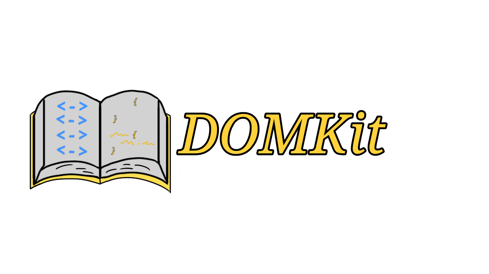
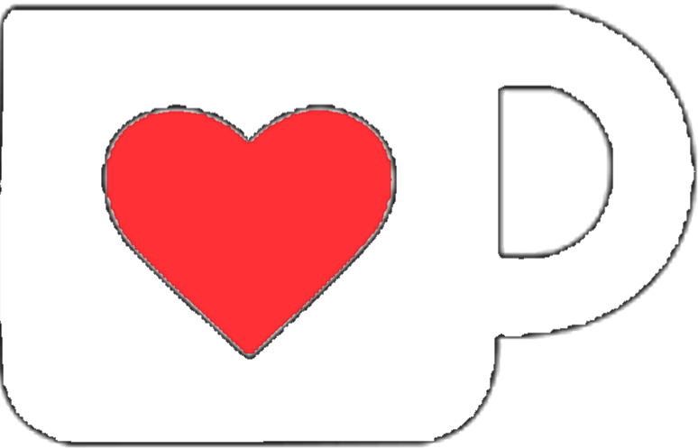

Hello there! I see you've stumbled across my portfolio!
Allow me to introduce myself.
I'm primarily a website developer, with experience in software development, with the following achievement:
Bachelor of Science (Hons. Computer Science)
Who's currently working towards
Master of Science (Hons. Adv Computer Science)
My passion mainly revolves around web development and UI and UX design, but I have a few other things I like to do in my free time, such as art and writing.
Find my CV here.
Python, Java, JavaScript, HTML, CSS, C++, C#
React.js, Django, Node.js, Express.js, Flask.py
Azure (UI Prototype Building & Testing), ProjectLibre (Project Management software), WordPress (designing)
Cardiff University [2021-2024]
BSc Computer Science
3 Years
University of South Wales [2025-Present]
MSc Advanced Computer Science
2 Years (currently on Second Year)
Course Name
Completion Status
(Legacy) Responsive Web Design V8 Certification
Completed
A1 Professional Spanish Certification (Beta)
In Progress
Python Certification
In Progress
JavaScript Certification
In Progress
Front-End Development Libraries Certification
In Progress
To see the full log of website updates, click here.
For more of my Projects, click here!

Introducing... DOMKit! A HTML elements library designed to simplify the creation of essential HTML elements, while also applying some default styling.
Read the docs here!
[REMINDER] The DOMKit feedback form will be closing in 2 weeks. Find the form here if you wish to provide feedback!
Introducing... ProjectBot! A non-AI chatbot that helps you brainstorm coding project ideas based on what you're interested in working on.
Hmmm... There isn't a repository for this project at the current time. Check back later for updates!
Read the article about this project here!
Interested to see what I've been working on? Check out my GitHub Profile!
Are you interested in my works? Do you have a project idea and like to work with me to bring it to life? Go ahead and contact me!
Email: jessydavies@hotmail.com
Socials
